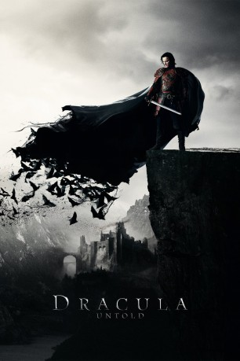
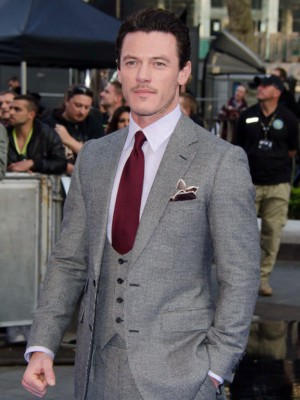
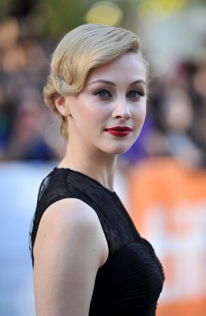
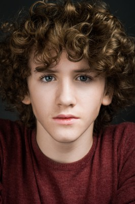
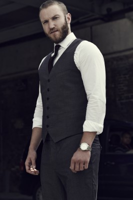
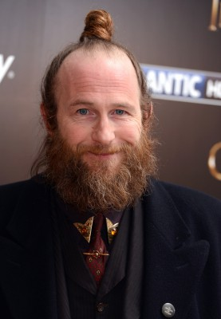
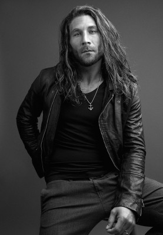
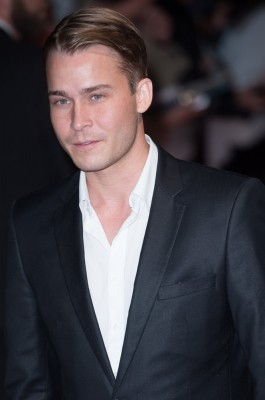
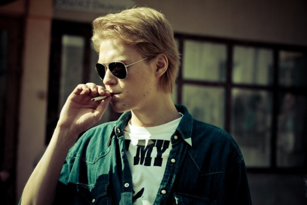
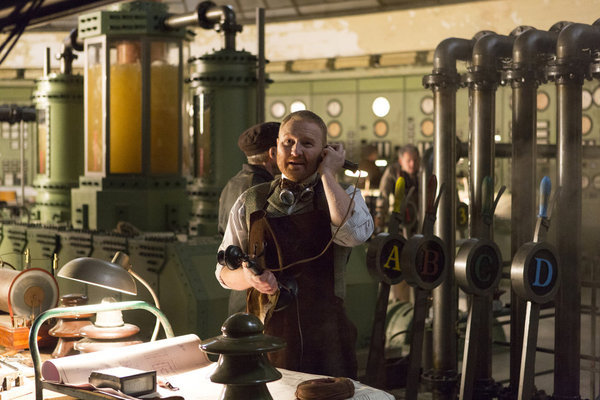

#48 Dracula Untold
 
 IMDB-Wertung: 6.3 / 10
IMDB-Wertung: 6.3 / 10  Metascore: 40
Metascore: 40 
Die Heimat des Adligen Vlad Tepes wird vom gnadenlosen Sultan Mehmed bedroht, der als gefürchteter Eroberer die Lande unsicher macht. Um seine Frau Mirena, seinen Sohn und sein geliebtes Volk zu beschützen, lässt sich der junge Prinz auf eine uralte, mystische Macht ein und muss das wohl größtmögliche Opfer bringen, das von einem Menschen verlangt werden kann: seine Seele. Schließlich wird Vlad Tepes zum ersten Vampir, den die Menschheit je gekannt hat. Als Dracula bekämpft er seine Feinde und setzt alles daran, sein Land und seine Familie aus den Klauen des Sultans zu befreien. Während seine Lieben dem Tod entgehen, ist der Prinz fortan verflucht, als Toter unter den Lebenden zu weilen und seinen Blutdurst an den Kehlen der Menschen zu stillen...
Jahr: 2014
Dauer: 92 Minuten
FSK: 12
Land: USA Studio: Universal PicturesTonspuren: DTS - ,
Untertitel: Deutsch, Englisch,
Auflösung: 1080p (1920×800) Größe: 7833 MB
Genre: Action, Drama, Fantasy, Horror, Krieg
Regisseur: Gary Shore
Drehbuch: Matt Sazama, Burk Sharpless, Bram Stoker
Soundtrack: Ramin Djawadi
Darsteller:
-  Luke Evans als Vlad
-  Sarah Gadon als Mirena
 Dominic Cooper als Mehmed
Dominic Cooper als Mehmed-  Art Parkinson als Ingeras
 Charles Dance als Master Vampire
Charles Dance als Master Vampire-  Diarmaid Murtagh als Dumitru
-  Paul Kaye als Brother Lucian
- William Houston als Cazan
- Noah Huntley als Captain Petru
 Ronan Vibert als Simion
Ronan Vibert als Simion-  Zach McGowan als Shkelgim
- Ferdinand Kingsley als Hamza Bey
- Joseph Long als General Omer
-  Thor Kristjansson als Bright Eyes
-  Jakub Gierszal als Acemi
- Paul Bullion als Nicolae
- Mish Boyko als Andrei
- Dilan Gwyn als Governess
- Arkie Reece als General Ismail
- Dominic Borrelli als Wealthy Boyar
- Tom Benedict Knight als Turkish General
- Paul Casar als Intrigued Boyar
- Glen Barry als Lucian's Monk
- Gary Whelan als Lucian's Monk
-  Phil McKee als Vlad's Soldier
- Ross Moneypenny als Vlad's Soldier
- Charlene Gleeson als Lady of the Court
- Hunter Stratton Boland als Child of the Court
 Lasco Atkins als Transylvanian Villager , uncredited
Lasco Atkins als Transylvanian Villager , uncredited- Richard Buick als Ottoman Soldier , uncredited
- John Carr als Passerby , uncredited
- Ash Cook als Hero Boy , uncredited
- Alex Delescu als Castle guard , uncredited
- Laurence Doherty als Peasant Man , uncredited
- Nick Donald als Castle Gaurd , uncredited
- Richard Hansen als Adjutant , uncredited
- Joana Metrass als Handmaiden , uncredited
- Jesse Morris als Ottoman Soldier , uncredited
- Marco Staines als Vlad Soldier , uncredited
- Freigeist van Tazzy als Ottoman Soldier , uncredited
- John Warman als Office Worker , uncredited
- Andrew Zographos als Ottoman Army Guard , uncredited
- Joe Benjamin als Mihai
- Phil Zimmerman als Mihai's Father
- Stavros Demetraki als Mehmed's Adjutant
- Ruth Baxter als Mirena's Handmaiden
- Rachel Kennedy als Mirena's Handmaiden
- Louise Parker als Mirena's Handmaiden
- Shane McCaffrey als Lucian's Monk
- Guillaume Meliot als Omer's Adjutant
Datei: X:\2014(A-F)\Dracula Untold (2014, FSK12, 1920x800).mkv seit 02.02.2015
Festplatte: HD 2013(I-Z)-2014(A-Z)
 Es gibt insgesamt 119 Filme in der Gruppe '2014(A-F)'
Es gibt insgesamt 119 Filme in der Gruppe '2014(A-F)'